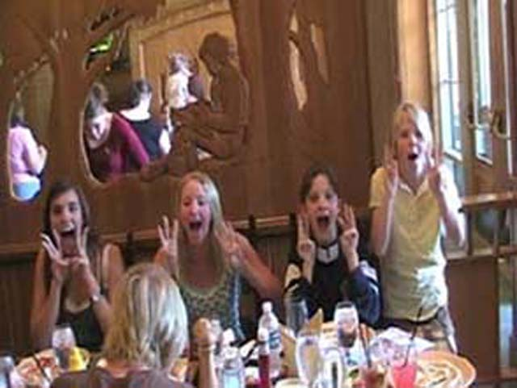
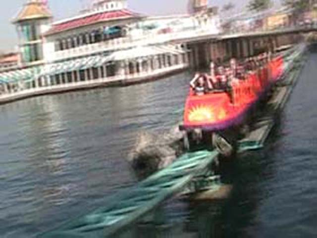
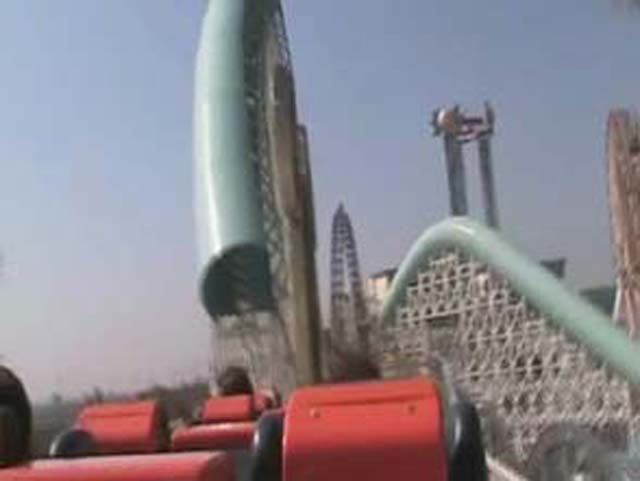

Rockin Disneyland
We got to go to Disneyland today and get to try out ROCKING SPACE MTN!!!!!!!
But First, We must have our picture taken with Shary Bobbins.
ITS ROCKIN SPACE MTN TIME!!!!!!
They still used the regular blue light system.
But it got these new pretty blue lights.
 HOLY CRAP!!! IT IS THE TRACK OF SPACE MTN!!!!!
HOLY CRAP!!! IT IS THE TRACK OF SPACE MTN!!!!!
 Overall, Its cool that they're doing this for a temporary time because its good to something diffrent, but I'd be pissed if this was permanent.
Overall, Its cool that they're doing this for a temporary time because its good to something diffrent, but I'd be pissed if this was permanent.
Yay for Nemo Construction!
He can't be the abomibal snowman, because I'M THE ABOMNIBLE SNOWMAN!!!!!! GRR!!!!!
 My strawberry Lemonade is so sweet it tastes like syrup.
My strawberry Lemonade is so sweet it tastes like syrup.
EMILY IS MAKING MORE CHEESE BREAD!!!! GRRR!!!!!!!
There goes the baker making 3 pizzas and 1 cheesebread.
Alisa, Get that s**t you call turkey out of my face this instant!

Hey Mom! I saw a Cow! It went Moo! WOW!!!!
 I curse Grizzly for making me wet!
I curse Grizzly for making me wet!
I love Mullholland Madness!!!!!

We got on Screamin, Sorry "Rockin" CA Screamin today as well thanks to fastpass.

They could keep it like this and I wouldn't give a damn. Its just new music. Everything else is the same.
If you look closely, you can see the bottom of the shaft on Tower of Terror.
Random stupidity involving a mirror.
 It's Soaring Time!
It's Soaring Time!
 DIE! DIE! I WILL KILL YOU WITH MY STUFFED ANIMAL ARIANA!!!!!!
DIE! DIE! I WILL KILL YOU WITH MY STUFFED ANIMAL ARIANA!!!!!!
When walking back to Disneyland,we saw a FREAKIN CAT IN THE FLOWERS!!!!!!
Buzz Lightyear didn't have too long of a wait with only 30 min.
I now know Buzz Lightyears Religion!
Cameron?!? What are you doing here? We didn't invite you on this trip!!!!
When you see a monkey with a gun, stab it with a knife!
The hippos are back to haunt you Andrew!!!!
 Just some of our Group acting "normal" on Jungle Cruise.
Just some of our Group acting "normal" on Jungle Cruise.
 Dole Floats are the best treats at Disneyland!
Dole Floats are the best treats at Disneyland!
They are good! Gimme a Dole Float! GRRR!
 BTW, This how crowded it was on what was supposed to be a school day in Anaheim.
BTW, This how crowded it was on what was supposed to be a school day in Anaheim.
We leave you with this shot of Paradise Pier!
Home